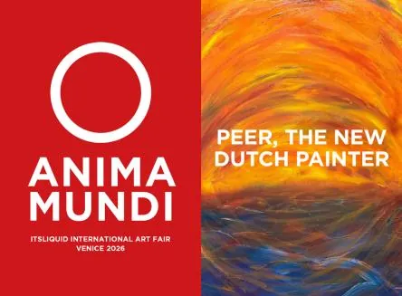

da mar 27 ott a lun 2 nov
PAINTINGS ABOUT THE ORIGIN OF LIFE - VENICE 2026
ITSLIQUID Group è lieta di annunciare l'apertura di "Paintings About the Origin of Life - Venice 2026", una mostra personale di Peer, The New Dutch Painter, a cura di Luca Curci e co-curata da Amaride Ferrante, che inaugurerà il 27 ottobre 2026 alle ore 18:00 a Palazzo…
 Indicazioni
Indicazioni
- Costi e prenotazioni
- Costo non indicato · Prenotazione non indicata
- Programma
- Programma da verificare. Apri la fonte ufficiale per orari e possibili aggiornamenti.
- In caso di maltempo
- Nessuna indicazione specifica pubblicata.
- Note
- Acquisito automaticamente dalla fonte.
L’EVENTO
Descrizione completa
PAINTINGS ABOUT THE ORIGIN OF LIFE - VENICE 2026
Mostra personale di Peer, The New Dutch Painter
27 ottobre - 02 novembre 2026
Palazzo Pisani-Revedin, Venezia
ITSLIQUID Group è lieta di annunciare l'apertura di "Paintings About the Origin of Life - Venice 2026", una mostra personale di Peer, The New Dutch Painter, a cura di Luca Curci e co-curata da Amaride Ferrante, che inaugurerà il 27 ottobre 2026 alle ore 18:00 a Palazzo Pisani-Revedin, a Venezia. La mostra resterà aperta fino al 2 novembre 2026.
L'esposizione riunisce una selezione di dipinti di grande formato che affrontano uno degli interrogativi più antichi e affascinanti dell'umanità: da dove veniamo?
Al centro della ricerca artistica di Peer vi è il concetto di abiogenesi, l'ipotesi scientifica secondo cui la vita sulla Terra sarebbe emersa dalla materia non vivente attraverso un processo di evoluzione chimica. Il termine indica il possibile passaggio da semplici sostanze non viventi alle prime forme di vita, un processo che resta uno dei più grandi interrogativi e misteri della scienza. Peer trasforma questa idea in un universo visivo ricco di immaginazione, popolato da creature primordiali, incontri cosmici e frammenti di un mondo antico. Più che illustrare letteralmente una teoria scientifica, i suoi dipinti usano l'origine della vita come punto di partenza per una riflessione più ampia sull'esistenza, sull'evoluzione e sul nostro rapporto con la natura.
Il suo linguaggio visivo si muove tra scienza, filosofia, spiritualità e umorismo, dando vita a narrazioni al tempo stesso giocose e profonde. Dietro i colori vivaci, i personaggi insoliti e i titoli provocatori si nasconde una riflessione più ampia sulle origini dell'esistenza e sull'interdipendenza di tutti gli esseri viventi. Non siamo separati dalla natura. Siamo natura. Le creature, provenienti da un passato immaginato, diventano metafore dell'esistenza umana contemporanea: cercano, lottano, si legano, si riproducono, vagano e si adattano, mosse dalle stesse forze che da miliardi di anni plasmano la vita. Le opere di Peer invitano lo spettatore a immaginare un mondo precedente all'umanità, al linguaggio, alla civiltà: un tempo in cui la vita muoveva ancora i suoi primi, incerti passi.
L'attenzione al tema della connessione sposta gradualmente la mostra dalle origini della vita alla natura stessa dell'esistenza. Le creature di Peer possono appartenere a un mondo preistorico immaginario, eppure le loro esperienze sono immediatamente riconoscibili: cercano compagnia, lottano contro l'incertezza, affrontano il cambiamento e tentano di orientarsi in un universo sconosciuto.
"Lost in Space" trasforma questo smarrimento primordiale in una metafora contemporanea del senso di disconnessione dell'umanità, mentre "The Moon and Me" introduce una dimensione più solitaria, mettendo in relazione la vastità del cosmo con il desiderio universale di significato e di appartenenza.
Anche il passaggio della vita da una generazione all'altra diventa parte di questa narrazione più ampia. In "Nonno And His Rebellious Grandson" il mondo primordiale si fa inaspettatamente familiare, e il rapporto tra due generazioni diventa occasione per riflettere su continuità, differenza e persistenza dei legami. Allo stesso modo, "The Curious Twins" cattura lo stupore dell'incontro con un universo ancora in formazione. Il loro sbigottimento diventa il nostro: guardando queste creature, lo spettatore è invitato a riconsiderare il mistero dell'essere vivi. Peer introduce inoltre volutamente umorismo, ironia e assurdo in un tema tradizionalmente associato alla speculazione scientifica e alla gravità filosofica. I personaggi insoliti e i titoli provocatori gli permettono di affrontare questioni profonde senza trasformarle in dichiarazioni solenni. In "The Funny One" l'umorismo stesso diventa istinto di sopravvivenza, mentre opere come "Mrs. Robinson, I Presume?" trasformano l'incontro tra esseri primordiali in un momento sorprendentemente umano.
Nel loro insieme, le opere compongono un viaggio visivo attraverso emersione, connessione, adattamento e trasformazione: l'origine della vita appare come un processo continuo, che plasma i modi in cui gli esseri viventi esistono, interagiscono ed evolvono nel tempo. La storia della vita è anche la nostra storia.
Volgendo lo sguardo agli oceani, alle stelle, ai primi organismi e alle forze primordiali che hanno plasmato il nostro pianeta, Peer ci invita a riconsiderare il nostro posto nella più ampia rete dell'esistenza. I suoi dipinti ci ricordano che, molto prima che l'umanità iniziasse a definirsi separata dal mondo naturale, ne faceva già parte.
Organizzato da ITSLIQUID Group
Curatrice associata Amaride Ferrante
Graphic designer Sara De Rosa
A solo exhibition by Peer, The New Dutch Painter
San Marco 4013A, Venezia, Italia
27 ottobre 2026 | ore 18:00
Ingresso gratuito - Registrazione qui
28 ottobre - 2 novembre 2026
Dal lunedì alla domenica | 10:30 - 13:30 e 14:30 - 18:00
Peer, The New Dutch Painter - Biografia
Peer, The New Dutch Painter è un artista contemporaneo olandese, autore di dipinti vibranti e di grande formato che indagano l'emergere della vita e il posto dell'umanità nella natura. Autodidatta, Peer ha sviluppato un linguaggio visivo inconfondibile, fondato su colori audaci, composizioni espressive, personaggi insoliti e titoli che invitano a riflettere. I suoi dipinti uniscono una forte immediatezza visiva a narrazioni che spingono lo spettatore a interrogarsi sull'esistenza, sull'evoluzione e sui legami tra gli esseri umani.
Prima di dedicarsi interamente alla pittura, Peer è stato per molti anni CEO di una delle principali agenzie di comunicazione strategica e design di Amsterdam. La sua carriera internazionale si è costruita attorno a strategia, comunicazione e storytelling, discipline che continuano a influenzare il suo approccio alla pittura. Dopo le prime mostre in Europa, tra cui diverse presentazioni nei Paesi Bassi, Peer sta ora consolidando la propria presenza nella scena internazionale dell'arte contemporanea.
La sua ambizione artistica va oltre la creazione di dipinti di forte impatto visivo: attraverso la sua opera cerca di aprire un dialogo, suscitare meraviglia e riavvicinare le persone alla più grande storia della vita sulla Terra.
IL PROGRAMMA
Programma e orari
Appuntamenti raccolti dalle fonti elencate. Dove manca un orario, non è ancora disponibile in questa scheda.
Programma pubblicato
- Dal 2026-10-27 al 2026-11-02
INFORMAZIONI UTILI
Prima di partire
- Controllare la fonte prima di partire.
ORGANIZZAZIONE